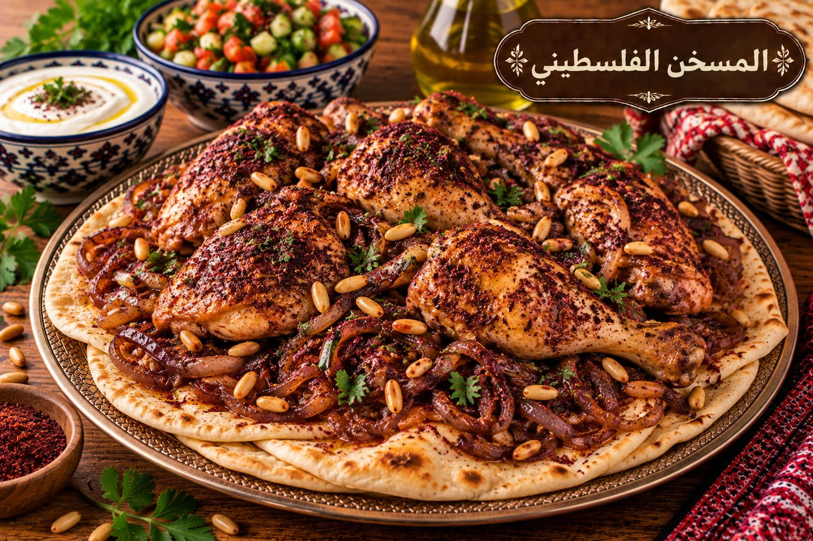

المسخن الفلسطيني
دجاج وبصل وسماق على خبز الطابون

مقادير المسخن الفلسطيني
- 1 دجاجة
- 5 بصلات كبيرة
- ½ كوب زيت زيتون
- 3 ملاعق كبيرة سماق
- 1½ ملعقة صغيرة ملح
- ½ ملعقة صغيرة فلفل أسود
- خبز طابون
- ½ كوب صنوبر
طريقة عمل المسخن الفلسطيني
- تبلي الدجاج بالملح والفلفل واطهيه حتى ينضج ثم حمريه.
- قطعي البصل واطهيه بزيت الزيتون على نار متوسطة هادئة حتى يلين من دون أن يجف.
- أضيفي السماق للبصل وقلبي دقيقة ثم تذوقي الملح.
- وزعي البصل وزيته على خبز الطابون وضعي الدجاج فوقه.
- أدخليه الفرن دقائق للتسخين والتحمير وزيني بالصنوبر.